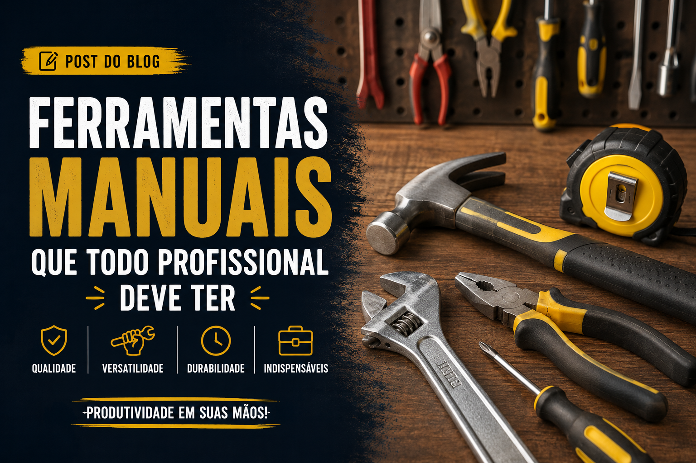

Ferramentas

Ferramentas manuais que todo profissional deve ter
Ter as ferramentas manuais certas faz toda a diferença na qualidade e na eficiência de qualquer trabalho. Neste artigo, você conhecerá os equipamentos essenciais que não podem faltar na caixa de ferramentas de um profissional, garantindo mais praticidade, segurança e produtividade no dia a dia.